| 领域 | 应用场景 | 优势 |
|---|---|---|
| 生态学 | 森林火灾蔓延、种群动态、生态系统演替 | 捕捉空间异质性 |
| 流行病学 | 传染病空间传播、疫苗接种策略优化 | 模拟个体接触网络 |
| 交通工程 | 交通流模拟、拥堵形成机制 | 展现突发拥堵现象 |
| 城市规划 | 城市扩张模拟、土地利用变化 | 整合GIS数据 |
| 物理学 | 晶体生长、渗流现象、相变 | 模拟微观过程 |
| 计算机科学 | 图像处理、密码学、并行计算 | 并行化效率高 |
元胞自动机完整教程
从理论基础到R语言实现的系统指南
特殊应用
计算模拟
复杂系统
探索元胞自动机的理论基础、数学原理与R语言实现,涵盖Conway生命游戏、交通流模拟等经典应用场景
领域背景与适用场景
什么是元胞自动机?
元胞自动机 (Cellular Automata, CA) 是一种离散的动力学系统模型,由数学家 John von Neumann 在 1940 年代提出。它的核心思想非常简单却极其强大:
类比: 想象一个棋盘,每个格子(元胞)有自己的状态(如黑或白)。每一轮,每个格子根据邻居格子的状态和固定规则决定下一轮的状态。所有格子同时更新,形成时空演化模式。
这种简单的局部交互规则,能够产生出极其复杂的全局行为,这正是元胞自动机的魅力所在。
核心研究问题
元胞自动机主要用于研究:
- 涌现现象 (Emergence): 简单规则如何产生复杂模式
- 自组织 (Self-organization): 系统如何从无序演化为有序
- 空间动力学: 空间结构如何影响系统演化
- 多主体交互: 个体局部行为如何影响群体动态
元胞自动机 vs 传统建模方法

对比说明: 上图对比了元胞自动机与传统微分方程建模的核心差异。元胞自动机以个体为基础,在离散时空中演化,天然支持空间异质性和个体随机性,但计算复杂度较高。
典型应用场景
核心概念与术语
基本术语表
| 中文术语 | 英文术语 | 定义说明 |
|---|---|---|
| 元胞 (Cell) | Cell | 空间网格中的基本单元,系统的最小组成部分 |
| 状态 (State) | State | 元胞在某一时刻的属性值,如0/1、死/活等 |
| 邻域 (Neighborhood) | Neighborhood | 某个元胞周围影响其演化的元胞集合 |
| 规则 (Rule) | Rule | 根据邻域状态确定元胞下一状态的转换函数 |
| 格子 (Lattice) | Lattice | 所有元胞组成的空间结构,通常是规则网格 |
| 边界条件 (Boundary) | Boundary Condition | 格子边缘元胞的处理方式,如周期性、固定值等 |
| 时间步 (Time Step) | Time Step | 离散的时间单位,每个时间步所有元胞同步更新 |
| 演化 (Evolution) | Evolution | 系统随时间的状态变化过程 |
元胞自动机的四要素

结构说明: 上图展示了元胞自动机的基本组成要素 —— 元胞、状态、邻域和规则。这四个要素共同定义了一个完整的元胞自动机系统。
一个完整的元胞自动机系统由以下四要素定义:
- 元胞空间 (Cellular Space)
- 维度: 1维(线)、2维(面)、3维(体积)
- 形状: 方形网格、六边形网格、三角形网格等
- 状态集合 (State Set)
- 二值状态: {0, 1} 或 {死, 活}
- 多值状态: {0, 1, 2, …, k-1}
- 连续状态: 实数区间 [0, 1]
- 邻域类型 (Neighborhood Type)
- 冯诺依曼邻域 (Von Neumann): 上下左右4个邻居
- 摩尔邻域 (Moore): 周围8个邻居(包含对角线)
- 扩展邻域: 可自定义半径和形状
- 转换规则 (Transition Rule)
- 确定性规则: 相同邻域状态总是产生相同的下一状态
- 概率性规则: 允许随机性,引入概率转换
邻域类型详解
library(ggplot2)
# 创建网格函数
create_grid <- function(highlight_cells, title) {
expand.grid(x = 0:4, y = 0:4) |>
dplyr::mutate(
type = dplyr::case_when(
x == 2 & y == 2 ~ "center",
paste(x, y) %in% highlight_cells ~ "neighbor",
TRUE ~ "other"
)
) |>
ggplot(aes(x, y, fill = type)) +
geom_tile(color = "gray30", linewidth = 1) +
scale_fill_manual(
values = c(center = "#0ea5e9", neighbor = "#f59e0b", other = "white"),
labels = c(center = "当前元胞", neighbor = "邻居", other = "其他")
) +
coord_fixed() +
labs(title = title, fill = NULL) +
theme_minimal(base_size = 14) +
theme(
panel.grid = element_blank(),
axis.text = element_blank(),
axis.title = element_blank(),
legend.position = "bottom"
)
}
# 冯诺依曼邻域 (4邻居)
von_neumann <- c("2 3", "2 1", "1 2", "3 2")
p1 <- create_grid(von_neumann, "冯诺依曼邻域 (4邻居)")
# 摩尔邻域 (8邻居)
moore <- c("1 3", "2 3", "3 3", "1 2", "3 2", "1 1", "2 1", "3 1")
p2 <- create_grid(moore, "摩尔邻域 (8邻居)")
# 扩展邻域 (5×5)
extended <- paste(rep(0:4, 5), rep(0:4, each = 5))[
paste(rep(0:4, 5), rep(0:4, each = 5)) != "2 2"
]
p3 <- create_grid(extended[1:12], "扩展邻域 (半径=2)")
# 组合图
library(patchwork)
p1 + p2 + p3 + plot_layout(guides = "collect") &
theme(legend.position = "bottom")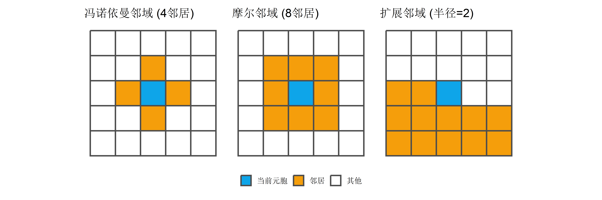
理论基础与数学原理
零基础通俗解释
生活类比: 元胞自动机就像社交网络中的观点传播:
- 元胞 = 每个人
- 状态 = 对某议题的态度(支持/反对)
- 邻域 = 你的朋友圈
- 规则 = “如果朋友中超过一半支持,我就改变观点”
- 演化 = 观点随时间在人群中传播扩散
即使每个人只看自己朋友的态度,整个社会的观点分布也会随时间产生复杂变化!
数学形式化定义
一个 \(d\) 维元胞自动机可以形式化定义为四元组:
\[ \text{CA} = \langle L, S, N, f \rangle \]
其中:
- \(L \subset \mathbb{Z}^d\): 元胞空间(格子),通常为 \(d\) 维整数网格
- \(S = \{s_0, s_1, \ldots, s_{k-1}\}\): 有限状态集合
- \(N = \{v_1, v_2, \ldots, v_n\}\): 邻域向量集合
- \(f: S^{|N|+1} \rightarrow S\): 局部转换规则函数
状态转换方程
对于位置为 \(\mathbf{r}\) 的元胞,其在时刻 \(t+1\) 的状态由以下方程决定:
\[ s_{\mathbf{r}}^{(t+1)} = f\left( s_{\mathbf{r}}^{(t)}, s_{\mathbf{r}+v_1}^{(t)}, s_{\mathbf{r}+v_2}^{(t)}, \ldots, s_{\mathbf{r}+v_n}^{(t)} \right) \]
关键特性:
- 局部性 (Locality): 元胞状态只依赖于固定邻域
- 同步性 (Synchrony): 所有元胞同时更新
- 一致性 (Homogeneity): 所有元胞使用相同规则
- 离散性 (Discreteness): 时间、空间、状态均为离散
Wolfram的元胞自动机分类
Stephen Wolfram 根据长期行为将元胞自动机分为四类:
| 类别 | 行为特征 | 典型例子 | 复杂度 |
|---|---|---|---|
| I类: 均匀态 | 演化至单一稳定状态 | 全0或全1 | 简单 |
| II类: 周期态 | 形成简单周期或稳定结构 | 规则4 | 简单 |
| III类: 混沌态 | 产生看似随机的混沌模式 | 规则30 | 复杂但无结构 |
| IV类: 复杂态 | 产生长寿命局部结构和复杂交互 | 规则110, 生命游戏 | 计算通用性 |
重要: IV类元胞自动机已被证明具有计算通用性,即可以模拟任何图灵机,这意味着简单规则可以产生任意复杂的计算!
边界条件
处理格子边缘元胞的方式:
周期性边界 (Periodic): 左右/上下相连,形成环面 \[s_{i, j} = s_{i \bmod m, j \bmod n}\]
固定边界 (Fixed): 边界元胞保持固定值(如0) \[s_{-1, j} = s_{m, j} = 0, \quad s_{i, -1} = s_{i, n} = 0\]
反射边界 (Reflective): 边界外镜像内部 \[s_{-1, j} = s_{0, j}, \quad s_{m, j} = s_{m-1, j}\]
无限空间 (Infinite): 边界外默认为某状态(通常为0)
# 演示不同边界条件的效果
demo_boundary <- function(type, title) {
n <- 10
mat <- matrix(0, n, n)
mat[5, 5] <- 1 # 中心点
# 根据边界类型设置边缘
if (type == "periodic") {
mat[1, 5] <- mat[n, 5] <- 0.5
} else if (type == "fixed") {
mat[1, ] <- mat[n, ] <- mat[, 1] <- mat[, n] <- NA
}
expand.grid(x = 1:n, y = 1:n) |>
dplyr::mutate(value = as.vector(mat)) |>
ggplot(aes(x, y, fill = value)) +
geom_tile(color = "gray50", linewidth = 0.5) +
scale_fill_gradient2(
low = "white", mid = "#fbbf24", high = "#dc2626",
na.value = "gray80",
midpoint = 0.5
) +
coord_fixed() +
labs(title = title) +
theme_void() +
theme(
legend.position = "none",
plot.title = element_text(hjust = 0.5, size = 14, face = "bold")
)
}
p_periodic <- demo_boundary("periodic", "周期性边界")
p_fixed <- demo_boundary("fixed", "固定边界")
p_infinite <- demo_boundary("infinite", "无限空间")
p_periodic + p_fixed + p_infinite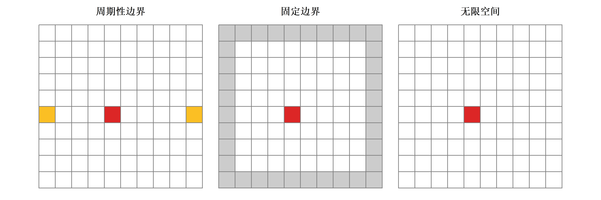
数据准备与环境配置
R包安装
元胞自动机在R中没有统一的专用包,我们将使用基础R和tidyverse工具构建:
# 核心可视化与数据处理
install.packages(c("ggplot2", "dplyr", "tidyr", "purrr"))
# 动画制作(可选)
install.packages(c("gganimate", "gifski"))
# 图像处理(可选)
install.packages("imager")library(ggplot2)
library(dplyr)
library(tidyr)
library(purrr)元胞自动机的R实现框架
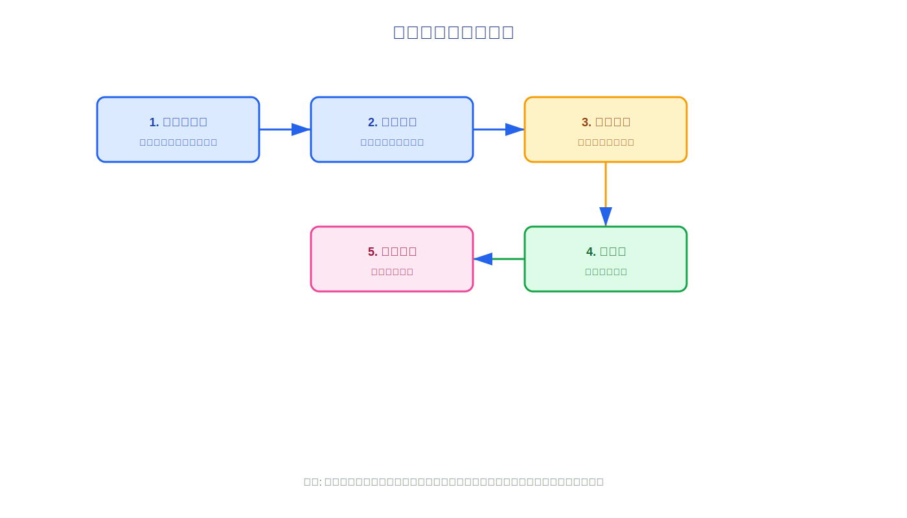
流程说明: 上图展示了在R中实现元胞自动机的标准五步流程 —— 初始化网格、定义规则、迭代演化、可视化和结果分析。
我们将构建一个模块化的元胞自动机框架:
# 1. 初始化网格
initialize_grid <- function(nrow, ncol, init_prob = 0.3) {
matrix(
sample(c(0, 1), nrow * ncol, replace = TRUE, prob = c(1 - init_prob, init_prob)),
nrow = nrow,
ncol = ncol
)
}
# 2. 获取邻域状态
get_neighbors <- function(grid, i, j, type = "moore") {
nrow <- nrow(grid)
ncol <- ncol(grid)
# 周期性边界
wrap <- function(x, max) ((x - 1) %% max) + 1
if (type == "moore") {
# 摩尔邻域 (8邻居)
coords <- expand.grid(di = -1:1, dj = -1:1) |>
filter(!(di == 0 & dj == 0))
} else if (type == "von_neumann") {
# 冯诺依曼邻域 (4邻居)
coords <- data.frame(
di = c(-1, 1, 0, 0),
dj = c(0, 0, -1, 1)
)
}
neighbors <- coords |>
mutate(
ni = wrap(i + di, nrow),
nj = wrap(j + dj, ncol)
) |>
rowwise() |>
mutate(state = grid[ni, nj]) |>
ungroup()
neighbors$state
}
# 3. 应用规则并更新
update_grid <- function(grid, rule_func, neighborhood = "moore") {
nrow <- nrow(grid)
ncol <- ncol(grid)
new_grid <- grid
for (i in 1:nrow) {
for (j in 1:ncol) {
neighbors <- get_neighbors(grid, i, j, neighborhood)
new_grid[i, j] <- rule_func(grid[i, j], neighbors)
}
}
new_grid
}
# 4. 演化模拟
simulate_ca <- function(initial_grid, rule_func, steps = 10, neighborhood = "moore") {
grids <- vector("list", steps + 1)
grids[[1]] <- initial_grid
for (t in 1:steps) {
grids[[t + 1]] <- update_grid(grids[[t]], rule_func, neighborhood)
}
grids
}
# 5. 可视化单个时间步
plot_grid <- function(grid, title = NULL) {
grid |>
as.data.frame() |>
mutate(row = row_number()) |>
pivot_longer(-row, names_to = "col", values_to = "state") |>
mutate(col = as.integer(gsub("V", "", col))) |>
ggplot(aes(col, -row, fill = factor(state))) +
geom_tile(color = "gray80", linewidth = 0.1) +
scale_fill_manual(
values = c("0" = "white", "1" = "#1e40af"),
labels = c("0" = "死亡", "1" = "存活")
) +
coord_fixed() +
labs(title = title, fill = "状态") +
theme_void() +
theme(
legend.position = "bottom",
plot.title = element_text(hjust = 0.5, face = "bold", size = 14)
)
}数据结构说明
元胞自动机的核心数据结构是二维矩阵:
# 创建5×5测试网格
test_grid <- matrix(c(
0, 0, 0, 0, 0,
0, 0, 1, 0, 0,
0, 1, 1, 1, 0,
0, 0, 1, 0, 0,
0, 0, 0, 0, 0
), nrow = 5, byrow = TRUE)
print("原始矩阵:")[1] "原始矩阵:"print(test_grid) [,1] [,2] [,3] [,4] [,5]
[1,] 0 0 0 0 0
[2,] 0 0 1 0 0
[3,] 0 1 1 1 0
[4,] 0 0 1 0 0
[5,] 0 0 0 0 0# 可视化
plot_grid(test_grid, "5×5 元胞网格示例")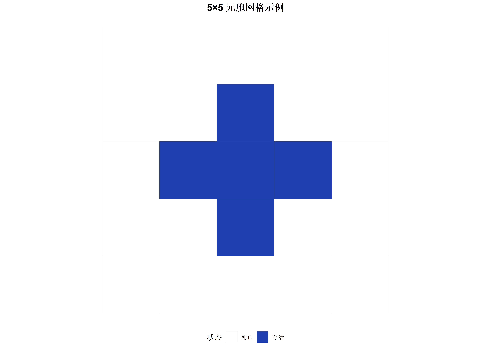
关键点:
- 行索引
i: 对应 y 坐标(从上到下) - 列索引
j: 对应 x 坐标(从左到右) - 矩阵元素
grid[i, j]: 该位置元胞的状态 - R中矩阵默认列优先存储,需注意索引顺序
完整实现流程
案例1: Conway生命游戏 (Game of Life)
生命游戏是最著名的元胞自动机,由数学家 John Conway 于1970年提出。
规则定义
生命游戏的规则极其简单:
- 生存: 活元胞周围有2或3个活邻居时继续存活
- 死亡: 活元胞周围少于2个或多于3个活邻居时死亡
- 繁殖: 死元胞周围恰好有3个活邻居时复活
# Conway生命游戏规则
life_rule <- function(current_state, neighbors) {
alive_neighbors <- sum(neighbors == 1)
if (current_state == 1) {
# 当前存活
if (alive_neighbors < 2 || alive_neighbors > 3) {
return(0) # 死亡
} else {
return(1) # 继续存活
}
} else {
# 当前死亡
if (alive_neighbors == 3) {
return(1) # 复活
} else {
return(0) # 继续死亡
}
}
}经典初始模式
生命游戏中有许多经典的稳定结构和振荡器:
# 滑翔机 (Glider) - 会移动的结构
create_glider <- function(grid, x = 5, y = 5) {
grid[y, x + 1] <- 1
grid[y + 1, x + 2] <- 1
grid[y + 2, x ] <- 1
grid[y + 2, x + 1] <- 1
grid[y + 2, x + 2] <- 1
grid
}
# 振荡器 (Blinker)
create_blinker <- function(grid, x = 10, y = 10) {
grid[y, x:(x+2)] <- 1
grid
}
# 稳定结构 (Block)
create_block <- function(grid, x = 15, y = 15) {
grid[y:(y+1), x:(x+1)] <- 1
grid
}
# 初始化20×20网格并放置经典图案（减小网格以加快渲染）
set.seed(2026)
grid <- matrix(0, nrow = 20, ncol = 20)
grid <- create_glider(grid, 3, 3)
grid <- create_blinker(grid, 10, 10)
grid <- create_block(grid, 15, 15)
plot_grid(grid, "生命游戏初始配置: 滑翔机 + 振荡器 + 稳定块")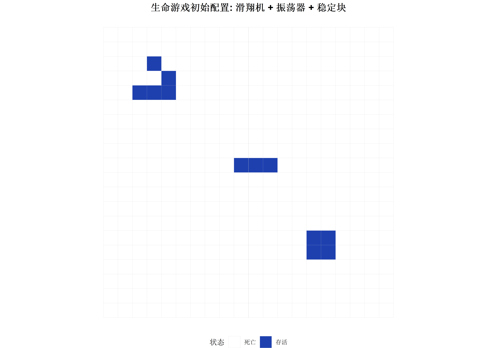
运行模拟
# 运行20代（减少迭代次数以加快渲染）
life_simulation <- simulate_ca(grid, life_rule, steps = 20, neighborhood = "moore")
# 显示关键时间步
library(patchwork)
p1 <- plot_grid(life_simulation[[1]], "t = 0")
p2 <- plot_grid(life_simulation[[6]], "t = 5")
p3 <- plot_grid(life_simulation[[11]], "t = 10")
p4 <- plot_grid(life_simulation[[16]], "t = 15")
p5 <- plot_grid(life_simulation[[21]], "t = 20")
p6 <- plot_grid(life_simulation[[21]], "t = 20 (最终)")
(p1 + p2 + p3) / (p4 + p5 + p6)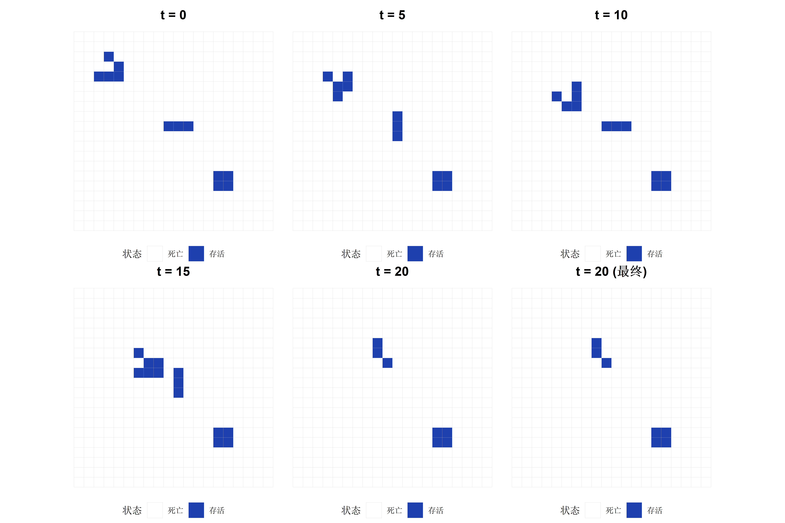
观察要点:
- 滑翔机: 每4代向右下方移动一格
- 振荡器: 每2代在横竖两种形态间切换
- 稳定块: 永远保持2×2方块形态不变
案例2: 森林火灾模拟
模拟森林火灾蔓延的空间动力学过程。
规则定义
# 森林火灾规则
# 状态: 0 = 空地, 1 = 树木, 2 = 着火, 3 = 灰烬
forest_fire_rule <- function(current_state, neighbors, ignition_prob = 0.0001, growth_prob = 0.01) {
if (current_state == 0) {
# 空地可能长出新树
if (runif(1) < growth_prob) return(1) else return(0)
} else if (current_state == 1) {
# 树木检查是否被点燃
if (any(neighbors == 2)) {
return(2) # 邻居着火则被点燃
} else if (runif(1) < ignition_prob) {
return(2) # 自发闪电
} else {
return(1) # 继续是树
}
} else if (current_state == 2) {
# 着火的树变成灰烬
return(3)
} else if (current_state == 3) {
# 灰烬变成空地
return(0)
}
}
# 包装成不带额外参数的函数
fire_rule_wrapper <- function(current, neighbors) {
forest_fire_rule(current, neighbors, ignition_prob = 0.001, growth_prob = 0.05)
}运行森林火灾模拟
# 初始化: 60%树木覆盖率（减小网格以加快渲染）
set.seed(2026)
forest_grid <- matrix(
sample(c(0, 1), 30 * 30, replace = TRUE, prob = c(0.4, 0.6)),
nrow = 30
)
# 在中心点燃一棵树
forest_grid[15, 15] <- 2
# 模拟15步（减少迭代次数）
forest_simulation <- simulate_ca(forest_grid, fire_rule_wrapper, steps = 15, neighborhood = "von_neumann")
# 自定义可视化函数
plot_forest <- function(grid, title = NULL) {
grid |>
as.data.frame() |>
mutate(row = row_number()) |>
pivot_longer(-row, names_to = "col", values_to = "state") |>
mutate(col = as.integer(gsub("V", "", col))) |>
ggplot(aes(col, -row, fill = factor(state))) +
geom_tile(color = NA) +
scale_fill_manual(
values = c("0" = "#f5f5dc", "1" = "#228b22", "2" = "#dc2626", "3" = "#525252"),
labels = c("0" = "空地", "1" = "树木", "2" = "着火", "3" = "灰烬")
) +
coord_fixed() +
labs(title = title, fill = "状态") +
theme_void() +
theme(legend.position = "bottom", plot.title = element_text(hjust = 0.5, size = 12))
}
# 展示演化过程
p1 <- plot_forest(forest_simulation[[1]], "t = 0")
p2 <- plot_forest(forest_simulation[[6]], "t = 5")
p3 <- plot_forest(forest_simulation[[11]], "t = 10")
p4 <- plot_forest(forest_simulation[[16]], "t = 15")
(p1 + p2) / (p3 + p4)
性能统计分析
分析元胞自动机的统计特性:
# 计算各时间步的统计量
calculate_stats <- function(grids) {
purrr::map_dfr(seq_along(grids), function(t) {
grid <- grids[[t]]
tibble(
time = t - 1,
n_alive = sum(grid == 1),
n_fire = sum(grid == 2, na.rm = TRUE),
density = mean(grid == 1, na.rm = TRUE),
clustering = calculate_clustering(grid)
)
})
}
# 计算聚类系数
calculate_clustering <- function(grid) {
# 简化版: 计算活元胞的平均邻居数
alive_cells <- which(grid == 1, arr.ind = TRUE)
if (nrow(alive_cells) == 0) return(0)
neighbor_counts <- apply(alive_cells, 1, function(pos) {
neighbors <- get_neighbors(grid, pos[1], pos[2], "moore")
sum(neighbors == 1)
})
mean(neighbor_counts) / 8 # 归一化到[0,1]
}
# 分析森林火灾
stats_forest <- calculate_stats(forest_simulation)
# 可视化统计量
ggplot(stats_forest, aes(x = time)) +
geom_line(aes(y = n_alive, color = "树木数量"), linewidth = 1) +
geom_line(aes(y = n_fire * 10, color = "着火数量×10"), linewidth = 1) +
scale_color_manual(
values = c("树木数量" = "#228b22", "着火数量×10" = "#dc2626")
) +
labs(
title = "森林火灾动态统计",
x = "时间步",
y = "元胞数量",
color = NULL
) +
theme_minimal(base_size = 14) +
theme(legend.position = "top")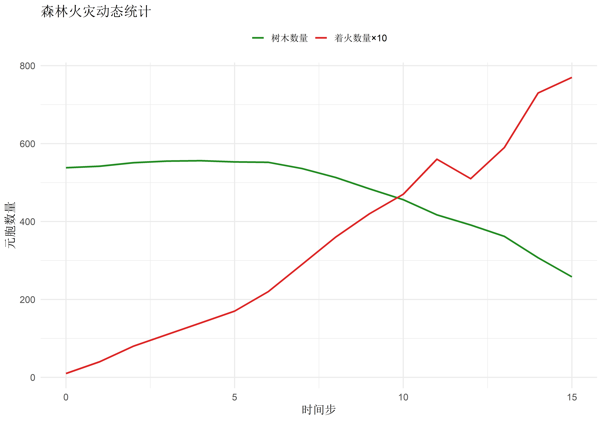
进阶应用与案例
案例3: 一维元胞自动机与Wolfram规则
一维元胞自动机更简单但同样能产生复杂行为:
# Wolfram规则编号系统
# 规则30: 01111000 (二进制) = 30 (十进制)
wolfram_rule <- function(rule_number) {
rule_binary <- as.integer(intToBits(rule_number)[1:8])
function(left, center, right) {
config_index <- left * 4 + center * 2 + right + 1
rule_binary[config_index]
}
}
# 一维CA演化
evolve_1d_ca <- function(initial_state, rule_func, steps = 50) {
n <- length(initial_state)
grid <- matrix(0, nrow = steps + 1, ncol = n)
grid[1, ] <- initial_state
for (t in 1:steps) {
for (i in 1:n) {
left <- grid[t, ifelse(i == 1, n, i - 1)]
center <- grid[t, i]
right <- grid[t, ifelse(i == n, 1, i + 1)]
grid[t + 1, i] <- rule_func(left, center, right)
}
}
grid
}
# 测试规则30 (产生混沌模式)
set.seed(2026)
initial <- rep(0, 101)
initial[51] <- 1 # 中心点为1
rule30 <- wolfram_rule(30)
grid_rule30 <- evolve_1d_ca(initial, rule30, steps = 50)
# 可视化
grid_rule30 |>
as.data.frame() |>
mutate(time = row_number() - 1) |>
pivot_longer(-time, names_to = "position", values_to = "state") |>
mutate(position = as.integer(gsub("V", "", position))) |>
ggplot(aes(position, -time, fill = factor(state))) +
geom_tile() +
scale_fill_manual(values = c("0" = "white", "1" = "black")) +
labs(title = "Wolfram规则30: 混沌模式生成器", x = "空间位置", y = "时间") +
theme_minimal() +
theme(legend.position = "none")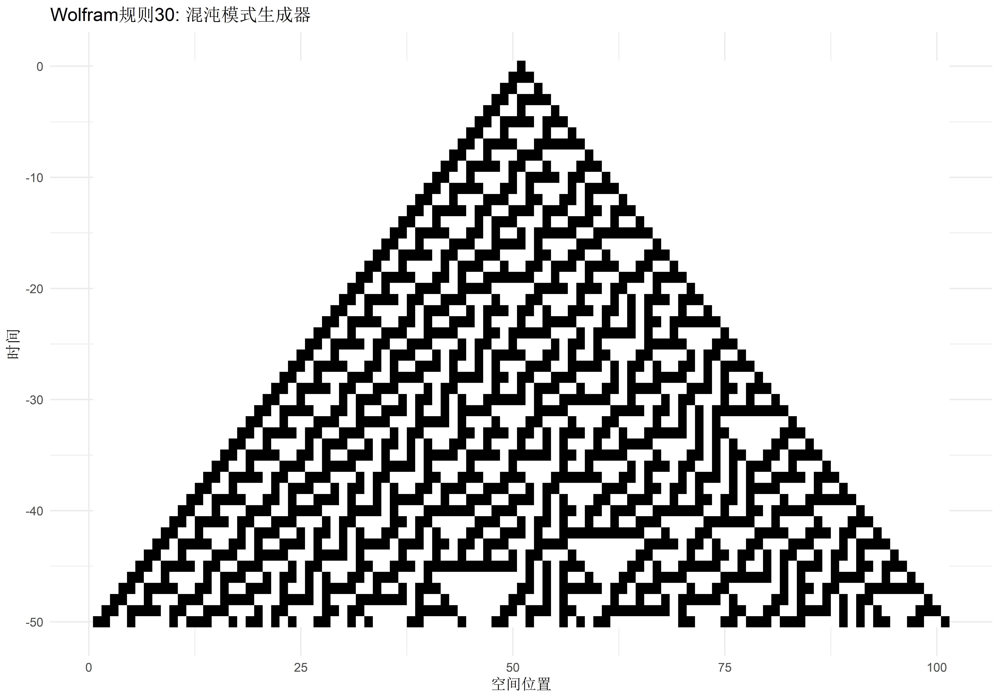
案例4: 交通流元胞自动机
模拟单车道交通流的NaSch模型 (Nagel-Schreckenberg):
# NaSch交通流模型
# 每个元胞是一个车位,状态为速度(0-5)
nasch_update <- function(road, vmax = 5, p_slow = 0.3) {
n <- length(road)
new_road <- road
for (i in which(road > -1)) { # 只处理有车的元胞
if (road[i] == -1) next # -1表示空车位
v <- road[i]
# 1. 加速
v <- min(v + 1, vmax)
# 2. 减速 (避免碰撞)
gap <- 0
for (j in 1:vmax) {
next_pos <- (i + j - 1) %% n + 1
if (road[next_pos] >= 0) break
gap <- gap + 1
}
v <- min(v, gap)
# 3. 随机慢化
if (runif(1) < p_slow && v > 0) {
v <- v - 1
}
# 4. 移动
new_pos <- (i + v - 1) %% n + 1
new_road[new_pos] <- v
if (new_pos != i) new_road[i] <- -1
}
new_road
}
# 模拟交通流
set.seed(2026)
road_length <- 100
density <- 0.3
road <- sample(c(-1, -1, 0, 1, 2), road_length, replace = TRUE,
prob = c(1-density, 0, density/3, density/3, density/3))
# 记录50步
traffic_history <- matrix(0, nrow = 50, ncol = road_length)
traffic_history[1, ] <- road
for (t in 2:50) {
road <- nasch_update(road, vmax = 5, p_slow = 0.2)
traffic_history[t, ] <- road
}
# 可视化 (速度热图)
traffic_history |>
as.data.frame() |>
mutate(time = row_number()) |>
pivot_longer(-time, names_to = "position", values_to = "speed") |>
mutate(
position = as.integer(gsub("V", "", position)),
speed = ifelse(speed == -1, NA, speed)
) |>
ggplot(aes(position, time, fill = speed)) +
geom_tile() +
scale_fill_gradient2(
low = "white", mid = "#fbbf24", high = "#dc2626",
midpoint = 2.5,
na.value = "gray90",
name = "速度"
) +
labs(
title = "单车道交通流时空图 (NaSch模型)",
subtitle = "密度=30%, 最大速度=5",
x = "空间位置 (车道)",
y = "时间步"
) +
theme_minimal(base_size = 14)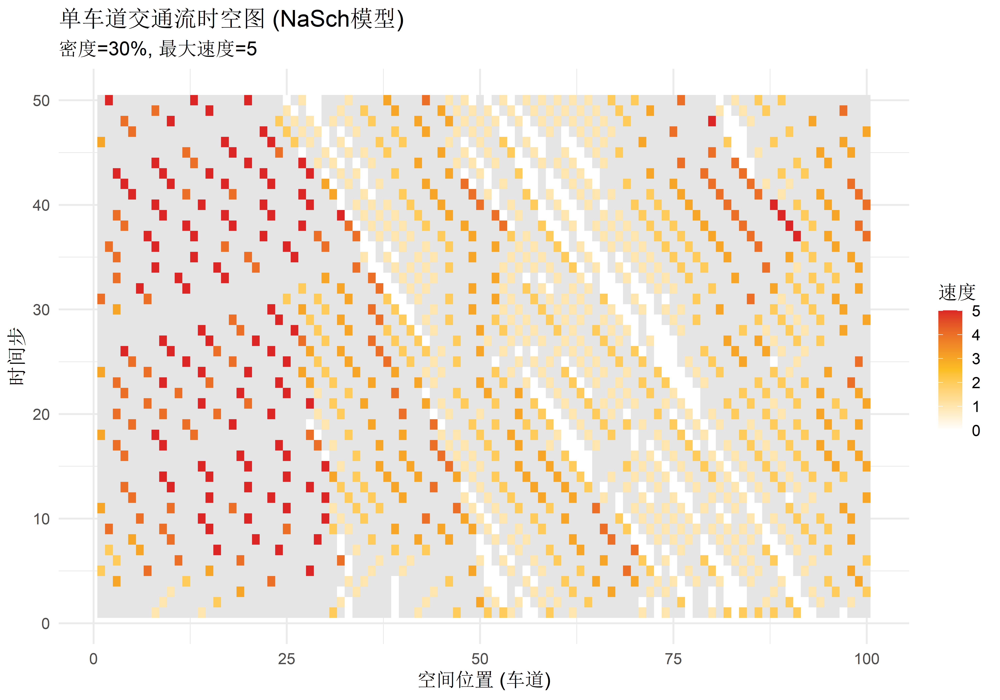
参数敏感性分析
研究参数如何影响系统行为:
# 测试不同初始密度对生命游戏的影响（减少测试点和迭代步数）
test_densities <- c(0.2, 0.4, 0.6, 0.8)
density_results <- purrr::map_dfr(test_densities, function(dens) {
set.seed(2026)
grid <- matrix(
sample(c(0, 1), 15 * 15, replace = TRUE, prob = c(1-dens, dens)),
nrow = 15
)
sim <- simulate_ca(grid, life_rule, steps = 20, neighborhood = "moore")
tibble(
density = dens,
time = 0:20,
alive = purrr::map_dbl(sim, ~sum(. == 1)),
survival_rate = alive / (15 * 15)
)
})
# 可视化敏感性
ggplot(density_results, aes(x = time, y = survival_rate, color = factor(density))) +
geom_line(linewidth = 1) +
scale_color_viridis_d(option = "plasma") +
labs(
title = "生命游戏对初始密度的敏感性",
x = "时间步",
y = "存活率",
color = "初始密度"
) +
theme_minimal(base_size = 14) +
theme(legend.position = "right")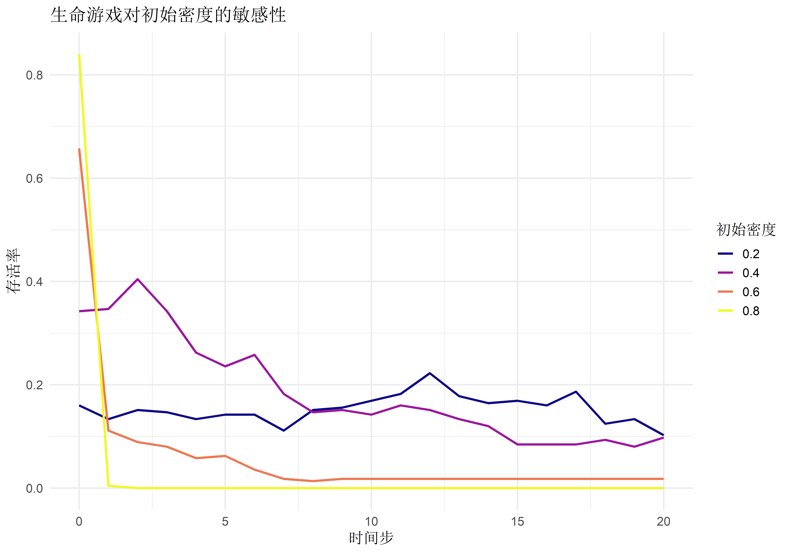
常见问题与解决方案
问题1: 边界效应如何处理?
问题: 边界元胞的邻域不完整,可能产生人为效应。
解决方案对比:
| 方法 | 优点 | 缺点 | 适用场景 |
|---|---|---|---|
| 周期性边界 | 消除边界效应,保持平移不变性 | 可能产生非物理的远程关联 | 理论研究,无穷系统近似 |
| 固定边界 | 简单直观,适合有限空间 | 边界处产生边缘效应 | 有明确物理边界的系统 |
| 吸收边界 | 模拟开放系统 | 需仔细设计以避免反射 | 流体、波动模拟 |
| 大尺寸系统 | 边界远离感兴趣区域 | 计算成本高 | 精确模拟 |
问题2: 如何加速大规模模拟?
优化策略:
- 向量化操作: 避免显式循环
- 稀疏表示: 只存储非零元胞
- 并行化: 利用多核CPU
- 空间分区: 分块更新减少内存访问
# 向量化版本 (仅适用于简单规则)
update_grid_vectorized <- function(grid) {
nrow <- nrow(grid)
ncol <- ncol(grid)
# 预计算所有邻居和
neighbors_sum <-
grid[c(nrow, 1:(nrow-1)), ] + # 上
grid[c(2:nrow, 1), ] + # 下
grid[, c(ncol, 1:(ncol-1))] + # 左
grid[, c(2:ncol, 1)] # 右
# 应用规则 (生命游戏示例)
new_grid <- matrix(0, nrow, ncol)
new_grid[grid == 1 & (neighbors_sum == 2 | neighbors_sum == 3)] <- 1
new_grid[grid == 0 & neighbors_sum == 3] <- 1
new_grid
}问题3: 随机性如何影响结果?
最佳实践:
- 设置随机种子: 确保可复现性
- 多次重复: 运行多次取平均
- 报告不确定性: 使用误差棒或置信区间
# 重复实验评估随机性（减少重复次数和迭代步数）
n_replicates <- 3
replicate_results <- purrr::map_dfr(1:n_replicates, function(rep) {
set.seed(2026 + rep)
grid <- initialize_grid(15, 15, init_prob = 0.3)
sim <- simulate_ca(grid, life_rule, steps = 15, neighborhood = "moore")
tibble(
replicate = rep,
time = 0:15,
alive = purrr::map_dbl(sim, ~sum(. == 1))
)
})
# 计算均值和标准差
summary_stats <- replicate_results |>
group_by(time) |>
summarise(
mean_alive = mean(alive),
sd_alive = sd(alive),
.groups = "drop"
)
# 可视化不确定性
ggplot(summary_stats, aes(x = time)) +
geom_ribbon(aes(ymin = mean_alive - sd_alive, ymax = mean_alive + sd_alive),
fill = "#60a5fa", alpha = 0.3) +
geom_line(aes(y = mean_alive), color = "#1e40af", linewidth = 1) +
labs(
title = "生命游戏演化的随机性 (3次重复)",
x = "时间步",
y = "存活元胞数",
subtitle = "阴影区域表示±1标准差"
) +
theme_minimal(base_size = 14)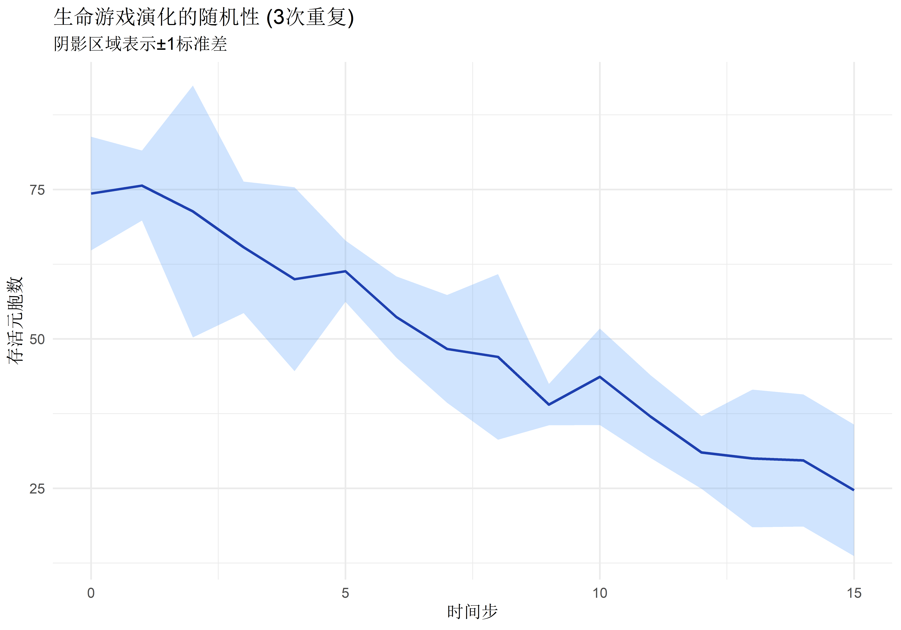
问题4: 如何验证模型正确性?
验证方法:
- 极限情况测试: 全0/全1初始状态
- 对称性检查: 旋转/翻转后结果应相同
- 守恒量验证: 某些模型有守恒量(如总质量)
- 与已知结果对比: 使用经典案例(如滑翔机)
总结
核心要点回顾
- 理论基础
- 元胞自动机由元胞、状态、邻域、规则四要素定义
- 简单局部规则能产生复杂全局行为
- Wolfram分类揭示了CA的多样性
- R实现
- 矩阵表示网格,函数封装规则
- 模块化设计便于扩展
- ggplot2提供强大可视化
- 应用场景
- 生命游戏: 涌现与自组织
- 森林火灾: 空间传播过程
- 交通流: 集体行为与相变
- 最佳实践
- 选择合适的边界条件
- 使用向量化提升性能
- 多次重复处理随机性
- 验证模型正确性
适用场景总结
推荐使用元胞自动机的情况:
✓ 系统具有明显的空间结构 ✓ 个体之间存在局部交互 ✓ 需要捕捉涌现现象 ✓ 关注空间异质性的影响
不适合使用元胞自动机的情况:
✗ 系统是连续的且无明显空间结构 ✗ 全局相互作用占主导 ✗ 需要精确数值解 ✗ 计算资源极度受限
进一步学习方向
- 深入理论
- 阅读Wolfram的《A New Kind of Science》
- 学习统计物理中的元胞自动机理论
- 扩展应用
- 三维元胞自动机
- 连续状态元胞自动机
- 异步更新机制
- 相关领域
- Agent-Based Modeling (ABM)
- 格子玻尔兹曼方法 (LBM)
- 离散事件模拟
- 技术提升
- 学习Rcpp加速R代码
- 尝试GPU并行计算
- 探索Julia等高性能语言
参考文献
Wolfram, S. (2002). A New Kind of Science. Wolfram Media.
Chopard, B., & Droz, M. (2005). Cellular Automata Modeling of Physical Systems. Cambridge University Press.
Toffoli, T., & Margolus, N. (1987). Cellular Automata Machines. MIT Press.
Ilachinski, A. (2001). Cellular Automata: A Discrete Universe. World Scientific.
Nagel, K., & Schreckenberg, M. (1992). A cellular automaton model for freeway traffic. Journal de physique I, 2(12), 2221-2229.
Gardner, M. (1970). Mathematical Games: The fantastic combinations of John Conway’s new solitaire game “life”. Scientific American, 223(4), 120-123.
在线资源:
- LifeWiki: Conway生命游戏百科
- Wolfram Atlas: 在线元胞自动机实验
- Golly: 开源生命游戏模拟器
R包:
simecol: 生态建模框架,支持元胞自动机animation: 创建动画展示演化过程